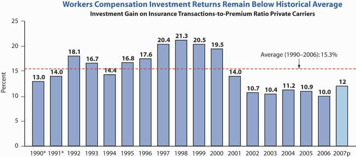
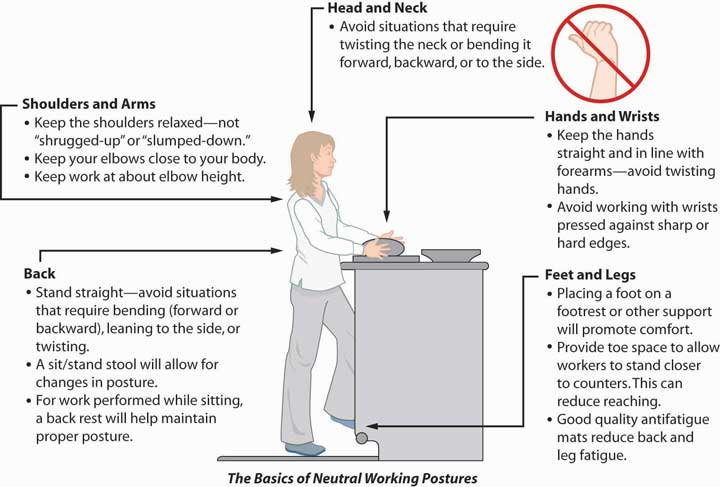

In this section we elaborate on several issues that workers’ compensation insurers must contend with, including the following:
As noted by the National Council of Compensation Insurance (NCCI), despite the improved results of the workers’ compensation line, the following are challenging issues faced by the industry:
Coverage for terrorism is a major issue for workers’ compensation. The problem has been somewhat alleviated by the relaunch of the Terrorism Risk Insurance Act (TRIA) of 2002 as the Terrorism Risk Insurance Program Reauthorization Act (TRIPRA), which provides protection until December 31, 2014. It is not a permanent solution, so the stakeholders are working on permanent solutions, including overall catastrophe pools.
As noted earlier, medical inflation, in addition to increased benefits through reforms in the states and attorney fees, have cost the system a substantial amount of extra expenses and caused escalation in the combined ratio for the workers’ compensation line. All medical care costs have, for decades, grown much faster than the overall consumer price index (CPI). Workers’ compensation medical care costs are of special concern. The high reimbursement rate (100 percent of allowable charges) by workers’ compensation relative to lower rates (generally 80 to 90 percent) in nonoccupational medical plans creates a preference for workers’ compensation among employees and medical care providers who influence some decisions about whether or not a claim is deemed work-related. The managed care option mentioned above is used, but because medical inflation is so high, the system cannot resolve the issue on its own.
Attorney involvement varies substantially among the states. It is encouraged by factors such as the following:
The solution may be a system that settles claims equitably and efficiently through promoting agreement and the employee’s timely return to work. Reforms in states such as California, Florida, Tennessee, and Wisconsin are examples of positive effects and cost controls. Wisconsin’s system is an example characterized by prompt delivery of benefits, low transaction costs, and clear communication between employers and employees.
The workers’ compensation combined ratio per calendar year since 1990 is shown in Figure 16.6 "Workers’ Compensation Combined Ratios". The combined ratio has declined since its peak of 122 in 2001.
As for the whole property/casualty industry, investment income results kept declining. The low interest rates took a toll on this long-tail line, requiring underwriting profits in order to provide returns to investors. The poor investment results are shown in Figure 16.7 "Workers’ Compensation Ratios of Investment Gain and Other Income to Premium".
Figure 16.7 Workers’ Compensation Ratios of Investment Gain and Other Income to Premium
* Adjusted to include realized capital gains to be consistent with 1992 and after.
Investment gain on insurance transactions includes other income.
Source: Dennis C. Mealy, FCAS, MAAA, National Council on Compensation Insurance (NCCI), Inc. Chief Actuary, “State of the Line” Annul Issues Symposium (AIS), May 8, 2008, accessed March 28, 2009, https://www.ncci.com/documents/AIS-2008-SOL-Complete.pdf. © 2008 NCCI Holdings, Inc. Reproduced with permission.
The next issue, privacy, has been discussed in prior chapters. This is an issue engulfing the whole industry and is relevant to the workers’ compensation line because of the medical and health components of this coverage. How to protect individuals’ health information from being identified and transmitted is the industry’s concern.
Employers, of course, benefit from having their liabilities limited to what is stipulated in workers’ compensation laws. When the benefits received by workers are a close approximation of what would be received under common law, employees receive a clear advantage as well from the law. Today, however, there is a perception that workers’ compensation provides inadequate compensation for many injuries. With high awards for punitive and general damages (neither available in workers’ compensation) in tort claims, workers often perceive the exclusivity of compensation laws as inequitable.
As a result, workers attempt to circumvent the exclusivity rule. One method is to claim that the employer acts in a dual capacity, permitting the employee an action against the employer in the second relationship as well as a workers’ compensation claim. For example, an employee injured while using a product manufactured by another division of the company might seek a products liability claim against the employer. Dual capacity has received limited acceptance. Consider the case of an employee of Firestone tires who uses the employer’s commercial auto with Firestone tires to make deliveries. If a tire exploded, the employee has a workers’ compensation claim as well as a case against the manufacturer of the tire—his own employer.
A second means of circumventing the exclusivity of workers’ compensation is to claim that the employer intentionally caused the injury. Frequently, this claim is made with respect to exposure to toxic substances. Employees claim that employers knew of the danger but encouraged employees to work in the hazardous environment anyway. This argument, too, has received limited acceptance, and litigation of these cases is costly. Further, their mere existence likely indicates at least a perception of faults in the workers’ compensation system.
A third circumvention of the exclusivity of workers’ compensation is the third-party over action. It begins with an employee’s claim against a third party (not the employer). For example, the employee may sue a machine manufacturer for products liability if the employee is injured while using the manufacturer’s machine. In turn, the third party (the manufacturer in our example) brings an action against the employer for contribution or indemnification. The action against the employer might be based on the theory that the employer contributed to the loss by failing to supervise its employees properly. The end result is an erosion of the exclusive remedy rule—as if the employee had sued the employer directly.
Another current issue in workers’ compensation is the broadening of the scope of covered claims. The original intent of workers’ compensation laws was to cover only work-related physical injuries. Later, coverage was extended to occupational illnesses that often are not clearly work-related. Claims for stress and cases involving mental health claims, especially after September 11, are on the increase.
The Supreme Court in 2002 clarified that only the inability to perform daily living activities is a disability under the Americans with Disabilities Act (ADA) and not the inability to perform a job. The ADA forbids employers with more than fifteen employees from discriminating against disabled persons in employment. Disabled persons are those with physical or mental impairments limiting major life activities such as walking, seeing, or hearing. The ADA requires that employee benefits, as a privilege of employment, be provided in a nondiscriminatory manner as well. Employees with disabilities must be given equal access to medical expense insurance coverage and disability coverage. If the medical plan does not cover certain treatment needed by persons with disabilities, such as vision care, the employer does not have to add vision care treatment. However, if vision care is provided by the plan, then vision care must also be offered to employees with disabilities. In addition, specific disabilities, such as vision impairment, or disability in general, cannot be excluded from coverage.
The other issue regarding repetitive activities that cause stress and carpal tunnel syndrome is still under consideration at the time of writing this text, as noted in “Should Ergonomic Standards be Mandatory?
In the waning days of the Clinton administration, the Occupational Safety and Health Administration (OSHA) issued sweeping new guidelines for ergonomics in the workplace. Ergonomics refers to the design and arrangement of workplace equipment in order to maximize worker safety, health, comfort, and efficiency. The new standards, which applied to all industries and nearly all types of businesses, both large and small, placed the ergonomic burden on employers (and, through them, on the states’ workers’ compensation insurance industry, which would be responsible for implementing the new rules). Every company was required to set up a program to manage ergonomics, including worker training, analysis and elimination of risk factors, and identification of musculoskeletal disorder (MSD) injuries. Of most concern to the insurance industry was a provision that mandated a set level of compensation for MSD injuries. By requiring compensation for ergonomic injuries to be between 90 and 100 percent of a worker’s salary, OSHA was infringing on state workers’ compensation systems, which awarded injured workers only 67 percent, on average, of their salaries up to a certain maximum.
Controversial from the start, the ergonomic standards were overturned by Congress in April 2001 just after George W. Bush took office. Working with the insurance industry, OSHA has since launched a voluntary program to reduce ergonomic injuries.
A review of OSHA activities (available at its Web site, http://www.osha.gov/SLTC/ergonomics/index.html) reveals that OSHA developed a “four-pronged comprehensive approach to ergonomics designed to quickly and effectively address musculoskeletal disorders (MSDs) in the workplace.” The following are four segments of OSHA’s strategy for reducing injuries and illnesses from MSDs in the workplace:
The new guidelines include more cooperation with business, including technical support and an education campaign. However, not everyone is pleased with the new voluntary standards; labor advocates reject them as not providing enough protection for workers. OSHA has issued updates to its guidelines tailored to different industries in response to these criticisms. If you visit OSHA’s Web site, you can view the educational component of the voluntary program for yourself. Along with a description of potential hazards and solutions, the site contains pictures (some animated) of both the correct and incorrect ways to undertake various work activities. Figure 16.8 "FIGURE 16.8 OSHA’s Basics of Neutral Working Postures", taken from OSHA’s Web site, is designed to illustrate the correct posture of a baker in a grocery store.
Figure 16.8 FIGURE 16.8 OSHA’s Basics of Neutral Working Postures
Questions for Discussion
Sources: Steven Brostoff, “Senate Sidesteps Ergonomics Mandate,” National Underwriter, Property & Casualty/Risk & Benefits Management Edition, July 29, 2002; Bruce C. Wood, “Federal Regs Threaten State WC System,” National Underwriter, Property & Casualty/Risk & Benefits Management Edition, August 19, 2002; Mark A. Hofmann, “Senate Committee Approves Ergo Rule Bill,” Business Insurance, June 19, 2002, accessed March 31, 2009, http://dev.businessinsurance.com/cgi-bin/news.pl?id=999; Steven Brostoff, “Ergonomic Rule Bill Moves,” National Underwriter Online News Service, June 19, 2002; Steven Brostoff, “Insurance Groups Support Ergo Plan,” National Underwriter, Online News Service, August 27, 2002; Arlene Ryndak and Julie L. Gackenbach, “Congress Should Not Tie OSHA’s Hands on Ergonomic Regulations,” National Underwriter, Property & Casualty/Risk & Benefits Management Edition, May 20, 2002; “Risk Managers, Insurers Get a Break on Ergonomics,” National Underwriter, Property & Casualty/Risk & Benefits Management Edition, April 22, 2002; Steven Brostoff, “New Ergonomics Bill Draws Insurer Ire,” National Underwriter, Property & Casualty/Risk & Benefits Management Edition, April 29, 2002; Caroline McDonald, “Insurers: New OSHA Ergo Plan Okay,” National Underwriter Online News Service, April 5, 2002; OSHA’s Web site at http://www.osha.gov/SLTC/ergonomics/index.html (accessed March 28, 2009).
In this section you studied the major issues faced by workers’ compensation insurers: